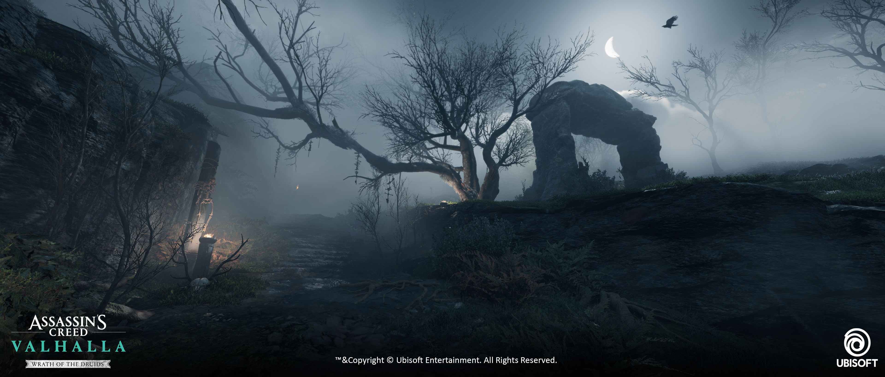

01 / AAA WORLD DIRECTION
Wrath of the Druids
Defining a distinctive ninth-century Irish territory inside an established global franchise—aligning environments, characters, props, VFX, textures and visual storytelling through production.
View case study